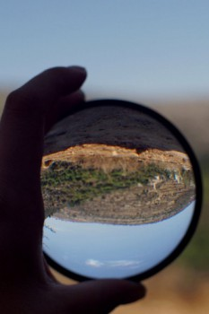

Country:Spain, 23 minutes
Spoken languages:
Genres:Documentary
Director(s):Milena Desse
Writer(s):
Video Codec:Unknown
Number: 5589

Certification:
Storyline:
Ein Qiniya, a small Palestinian village in the West Bank, occupied since 1967. This is where Milena Desse is to make her own enquiries: how can one decipher remaining traces and reconstruct History? How can one shine a light, as they say, on such places? Determined to unfold the layers and work out the creases like so many clues about some buried history, the young director strives like an archaeologist, equipped with a magnifying glass and a camera.
Cast:
Medium: Media file,
Location: D:\Personal\Sarah Disk\Documents\Curse\Minecraft\Install\assets\virtual\legacy\sounds\random\glass1.ogg
Loaned: No
Aspect ratio: Unknown